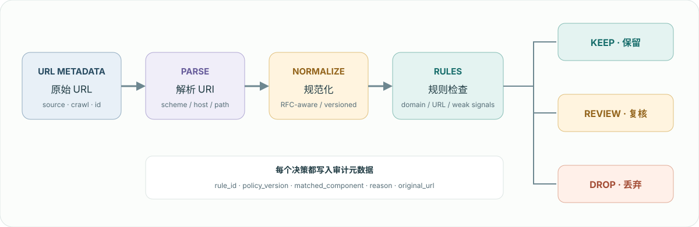
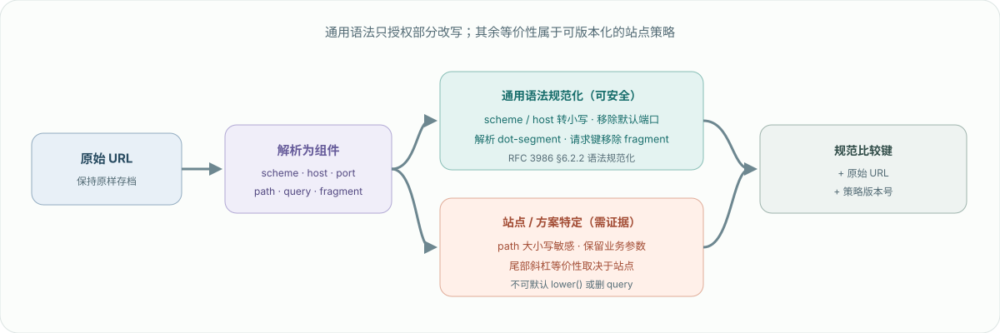

MODULE 06 / LLM DATA ENGINEERING
URL 与域名过滤
把来源策略从粗暴黑名单变成可审计的数据治理：URL 语义、域名画像、规则命中与误判边界。
在读取网页正文之前，我们能否利用 URL 与域名元数据减少无关工作？可以，但 URL 是资源定位符，不是内容质量标签；错误的规范化和黑名单会把有效内容一起删掉。
URL 不是内容质量的充分统计量
URL 过滤的优势是便宜：当采集索引或 WARC 元数据已经提供 URL 时，可以在昂贵的 HTML 解析、正文抽取和模型评分之前完成规则检查。对未来的定向抓取任务，它甚至可以在发起网络请求之前执行。这里要区分两种时点：过滤 Common Crawl 已有归档时，通常是在读取记录元数据后、解析正文前；控制一个新爬虫时，才可能在下载前拦截。
但同一个域名可以同时托管高质量论文、用户评论、广告和垃圾页；一个域名流量很高，也可能只是大型百科或文档站。URL 信号适合做 路由、策略约束和风险提示，不能单独证明正文“低质量”。

先尊重 URI 的语义，再谈规范化
RFC 3986 §6.2 区分了 URI 的语法规范化与方案特定规范化。通用语法下，scheme 和 host 不区分大小写；path 与 query 默认按大小写敏感处理。把整条 URL 全部转成小写，可能把两个不同资源错误地合并。
| 组件 | 安全的通用处理 | 需要谨慎的处理 |
|---|---|---|
| scheme / host | 转小写；移除对应方案的默认端口 | 不要把不同子域无条件合并 |
| fragment（# 后） | HTTP 请求不携带 fragment，可在请求资源键中移除 | 页面内锚点对浏览器导航仍有意义 |
| path | 按 RFC 规则处理 percent-encoding 与 dot-segment | 不要统一小写；尾部斜杠是否等价取决于站点 |
| query | 只移除已确认的跟踪参数，如 utm_source | 不要默认删除 id、page、lang、q 等业务参数，也不要随意重排 |
例如 https://EXAMPLE.org/Docs/Intro?lang=zh 与 https://example.org/docs/intro?lang=zh 的 host 等价，但 path 的大小写可能改变资源。规范化应是一个可版本化的策略函数，而不是一条“全部 lower()”的捷径。

三层规则：域名、完整 URL、路径特征
以 DataTrove 当前 URLFilter 实现为例，它支持域名与子域 blocklist、完整 URL 列表、硬禁止词、软禁止词计数和子串规则。实现会解析注册域名与 FQDN；过滤原因可以返回为 domain、subdomain、url 等标签。这说明实际过滤不是只匹配一个正则，而是多种策略组合。
域名策略
针对经过审核的注册域名或子域策略。记录来源、类别、更新时间和适用语料；不要将“在列表里”包装成客观的普适质量结论。
URL 精确策略
对已知恶意、重复入口或明确不符合项目政策的完整 URL 做匹配。精确列表比宽泛关键词更容易解释。
弱信号与复核
路径词、参数组合、域名新颖度、页面数量等属于弱信号。多个信号共同出现时可进入人工抽检，不应仅凭一个“可疑 TLD”直接判垃圾。
域名画像：异常检测不等于自动封禁
按注册域名统计文档数、token 数、重复率、语言比例、平均长度、内容类别和时间跨度。P95/P99 可以用来找出值得检查的长尾或头部异常域名，但分位数本身没有“垃圾”语义。大型知识站点可能天然处于分布头部；自动设置统一文档上限会系统性压低大型来源的覆盖。
更稳妥的策略是先生成域名画像，再按语言、领域和文档类型分层抽样。只有人工审计或独立标签支持时，才将某个域名升级为硬规则。对可信但过度代表的来源，可以考虑配比或采样权重，而不是一刀切删除。
一个保守的 URL 规范化示例
下面的示例只做几项明确的等价变换：scheme/host 小写、移除 fragment、删除已知跟踪参数。它保留 path 大小写、业务 query 参数及其顺序。生产实现还应明确 IDNA、IPv6、端口、百分号编码和站点特定规则。
from urllib.parse import urlsplit, urlunsplit, unquote_plus
TRACKING_KEYS = {"gclid", "fbclid", "mc_cid", "mc_eid"}
def canonicalize_url(url: str) -> str:
parts = urlsplit(url.strip())
scheme = parts.scheme.lower()
host = (parts.hostname or "").lower()
# 仅示例：保留显式非默认端口
port = parts.port
default_port = (scheme == "http" and port == 80) or (scheme == "https" and port == 443)
netloc = host if not port or default_port else f"{host}:{port}"
kept = []
for item in parts.query.split("&") if parts.query else []:
key = unquote_plus(item.split("=", 1)[0]).lower()
if key.startswith("utm_") or key in TRACKING_KEYS:
continue
kept.append(item)
return urlunsplit((scheme, netloc, parts.path, "&".join(kept), ""))交互练习：哪些 URL 可以安全合并？
以下样本是教学示例。点击案例，观察“可安全规范化”与“必须保留差异”的边界。
https://EXAMPLE.org/a → https://example.org/a。scheme 与 host 不区分大小写，可以统一。
本章参考资料
- RFC 3986 · Uniform Resource Identifier: Generic Syntax，尤其 §2、§3.4、§3.5 与 §6.2。
- Penedo et al. (2024), The FineWeb Datasets，§3.3：基础过滤中的 URL blocklist 是特定语料策略。
- DataTrove URLFilter source：域名、子域、URL 与词表规则的实现示例。